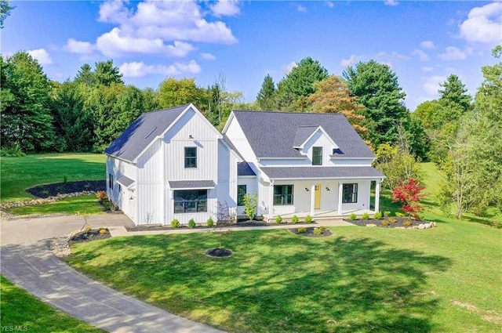

This Caption 1

This Caption 2

This Caption 3
"Master the mainframe was an incredible experience that opened up new opportunities that I did not know existed. Many employers took an interest in me and my knowledge with the mainframe. Master the Mainframe helped me gain valuable mainframe skills and land a stellar job opportunity working with IBM Z."
Anna MckeeGlobal Winner 2017 and 2018"It does take a time investment to be successful, but it’s very worthwhile. There’s a major skills gap in our generation. [What you learn] will easily kick-start your career. If I can do it, anyone can."
Mathew BowenGlobal Winner 2018"The contest changed the way I look at mainframes. It gave me a glimpse of the future of enterprise computing."
Zimbabwean Brian Zhou2018 MEA Winner